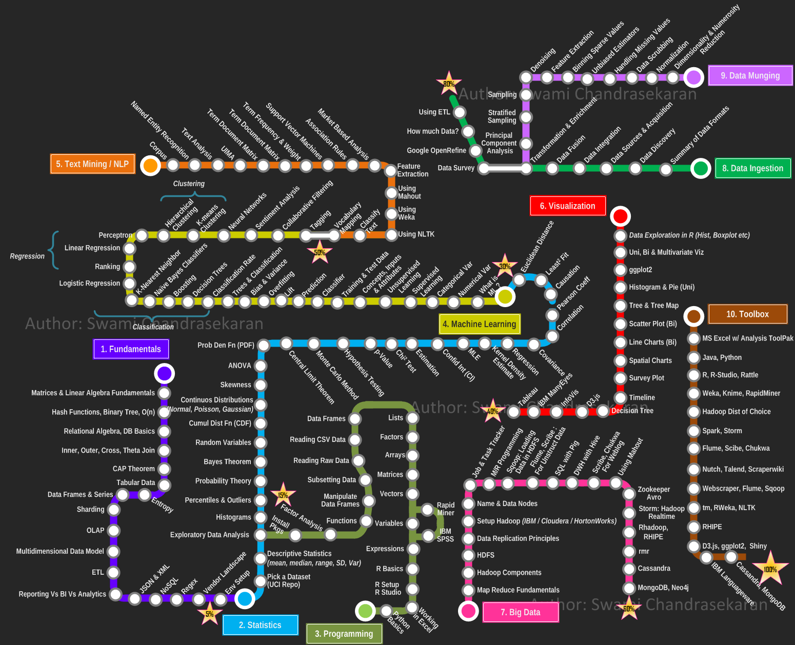
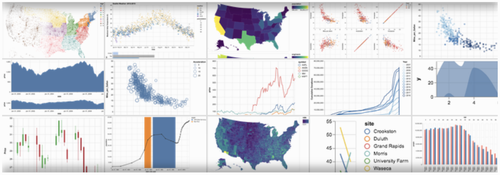

Python Science "Pipeline"/"Flow"
This document is created to link my personal files, and locate faster some resources, concepts, codes that I found inside the books in previous lectures. It tends to guide my AI team easy and faster to resources very spread on Internet.
The order here is important, is the way in which I see the process:
Contain the basics on ML. The second part is a broad description of ML pipeline. And the last part is well detailed (by chapter) exposition of Real World Case Studies.
General Pipeline
- Collecting Data
- Data Munging
- Data Wrangling
- Data Analysis/Exploring
- Feature Extraction
- Dimensionality Reduction
- Outliers Treatment
- Testing & Validation
- Hyper-param optimization
- Feature Selection
- Data Plotting/Visualization
- Building Models
- Model Evaluation
- Deploying Models into Apps
- Monitoring Models (Feedback)

Applications - Products
Technologies
Data Base Management System
- mariadb/mysql
- Mongodb
- Clickhouse
Text Wrangling
- Spacy & sus modelos
- lib propia: preprocess (depend on scipy, nltk & sklearn)
- Stanford library y su api de python (inside NLTK)
Data Analysis
- Amazon SageMaker
- GCloud ML, Bigquery ML
- Sklearn
- spark.ml
- Scipy
- Pandas
Deep Learning
- Tensorflow
- Keras High Level API
- Model Visualization: Tensorboard
Visualization with Altair
notebook collection Altair

Other Techs
| cython |
AWS |
VUE |
| PyCuda |
Apache Spark |
|
| Fortran |
Hadoop |
|
| Apache Spark |
GCloud |
|
| __ . __ . __ . __ |
__ . __ . __ . __ . __ |
__ . __ |
Standards & Protocols
DataTypes
- Apache Parquet: A columnar data format.
- Apache Arrow: In memory columnar data format
- CSV
- HDF5
- pandas.DataFrame
Interesting Links/Readings